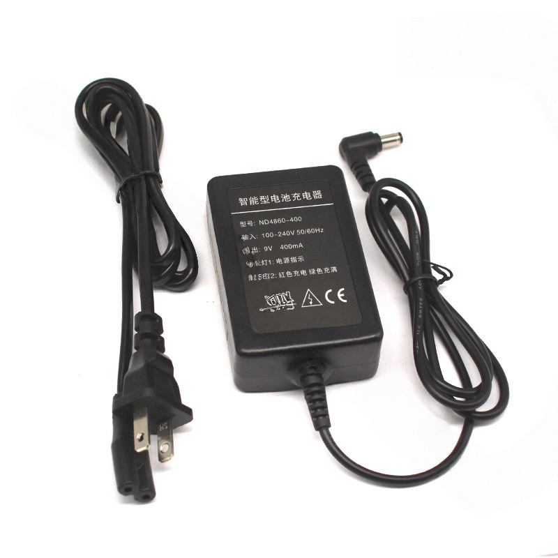
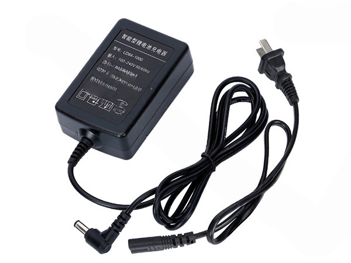
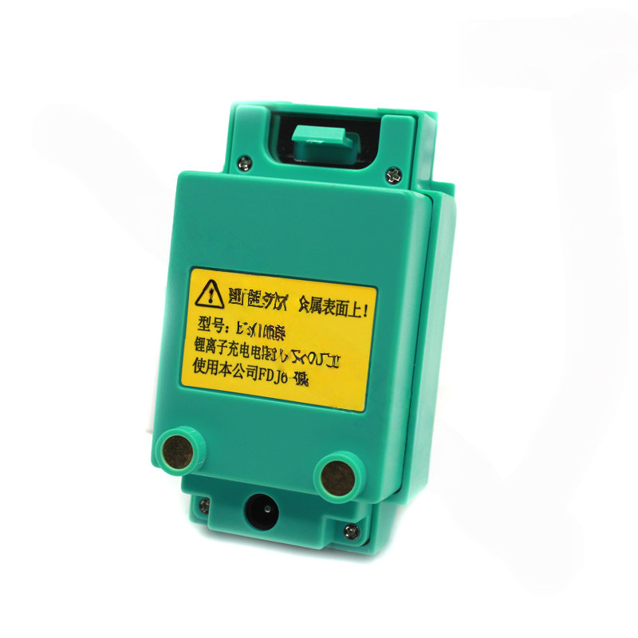

⚲Открыть фото крупнееND4860-400ND4860-400 Теодолит Зарядное устройство для NiMHЗапросПодробнее
⚲Открыть фото крупнееLD84-1000LD84-1000 5.5*2.5 Зарядное устройство для Li-ionЗапросПодробнее
⚲Открыть фото крупнееBT-82BT-82 Литий-ионный аккумулятор Зелёный, Серо-белыйЗапросПодробнее
⚲Открыть фото крупнееNivo 2M, 2C серия Тахеометр Зарядное устройство для аккумуляторовЗапросПодробнее
⚲Открыть фото крупнееLD84-1000LD84-1000 Зарядное устройство для литий-ионных аккумуляторовЗапросПодробнее
⚲Открыть фото крупнееLD84-1000LD84-1000 5.5*2.1 Зарядное устройство для литий-ионных аккумуляторовЗапросПодробнее
⚲Открыть фото крупнееBC-L1A/WBC-L1A/W Зарядное устройство для литий-ионных аккумуляторовЗапросПодробнее
⚲Открыть фото крупнееTJOP Лазерный электронный теодолит Аккумулятор Чёрный, Серый, Синий, КрасныйЗапросПодробнее
⚲Открыть фото крупнееTJOP Электронный теодолит Аккумулятор Чёрный, Серый, Синий, КрасныйЗапросПодробнее
⚲Открыть фото крупнееND6072-1200ND6072-1200 5.5*2.1 Универсальное зарядное устройство для аккумуляторов тахеометровЗапросПодробнее